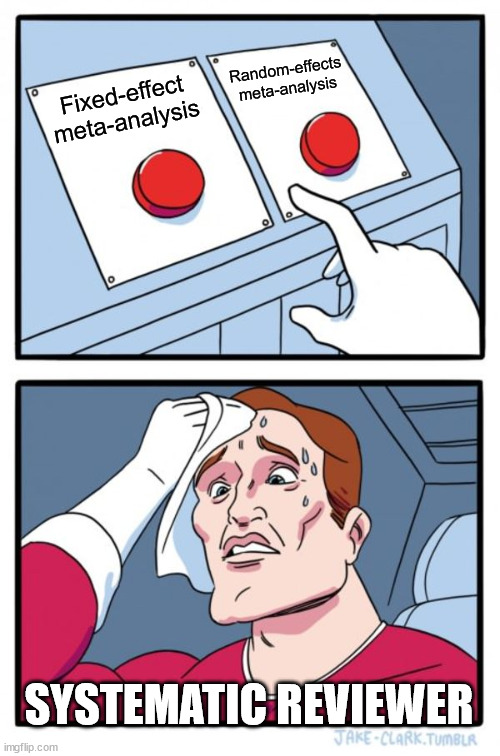
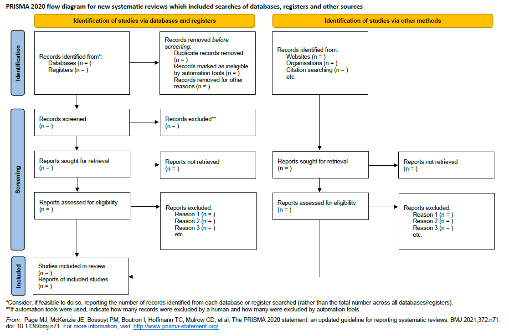
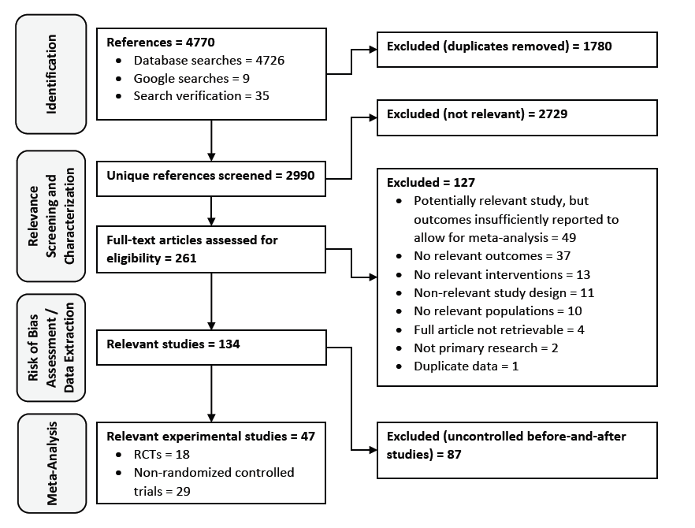
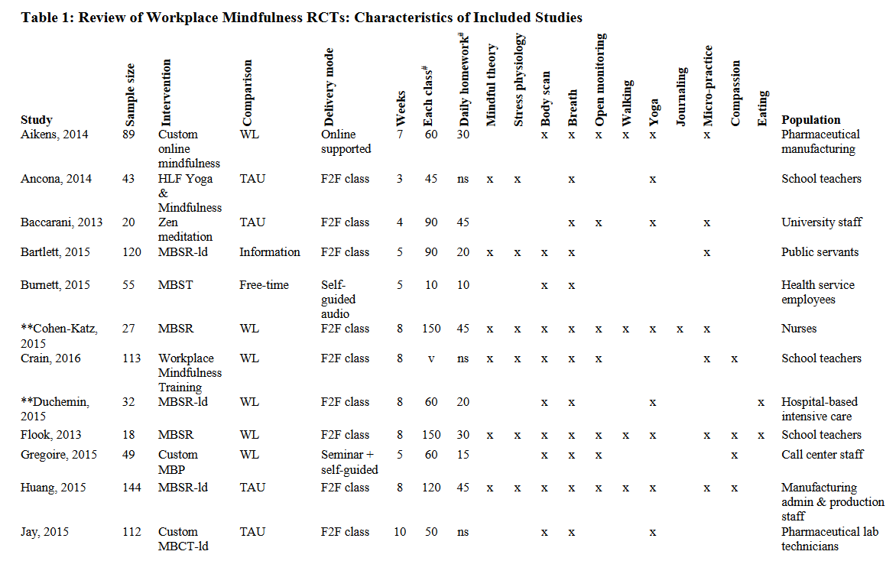
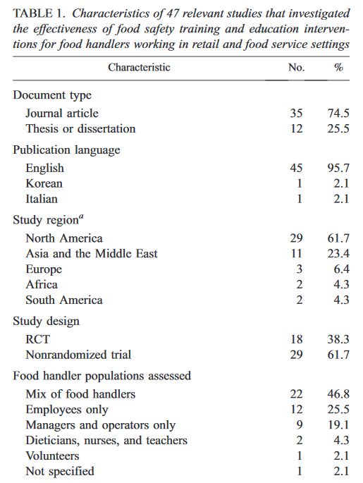
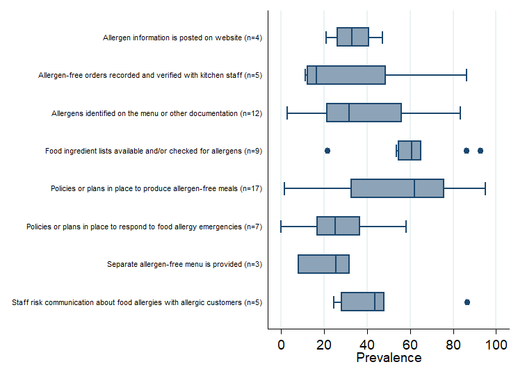

7 Data Analysis
This section provides an overview of data analysis methods in systematic reviews. The first step is to descriptively summarize and report article characteristics, and report a systematic review flow chart. Then, measures of effect can be analyzed, through meta-analysis if possible, or otherwise using other synthesis approaches.

7.1 Review Flow Chart
Usually the first part of data analysis and reporting results includes summarizing details of the number of studies captured in the review and included/excluded at each step. These details should be shown through a flow chart diagram or figure. The Preferred Reporting Items for Systematic Reviews and Meta-Analyses (PRISMA) reporting guideline has a template for flow charts. A copy of the flow chart template is shown below:

The flow chart should capture exact numbers of references identified from each source (e.g., bibliographic databases, grey literature, etc.) It should clearly indicate the number of references excluded and included at each step of the review, along with reasons for excluding references or articles. There is also an online Shiny app for creating flow charts using this template. An example flow chart from Young et al. (2019) is show below.

7.2 Descriptive Analysis of Article Characterization Results
The next step in analysis is usually to descriptively summarize the article characteristics (e.g., PICO/PECO elements, and other relevant article and study details). It can be helpful at this stage to start categorizing the PICO/PECO elements into groups that can facilitate summary displays (e.g., tables) and further analysis. For example, specific types of interventions and outcomes might be grouped together. A table can then be presented that has each relevant study as a row and specific columns for each of the relevant PICO/PECO elements or groups. An example of such a table from Bartlett et al. (2019) is shown below (note this shows only the first several studies included in the table):

In addition to showing a table with a the summary characteristics and PICO/PECO details for each study, in can also be useful, especially in cases where the number of relevant studies included in the review is very large, to create a tabulation table to show overall numbers and percentages of studies that investigated specific PICO/PECO elements and reported specific details. An example of such a table from Young et al. (2019) is shown below (note that only the first several rows of the table are shown here). In the example below, we will examine how to reproduce such a table in R.

Summary Article Characterization Table Example
As an illustrative example of calculating a summary tabulation table, we will load some selected article characterization data from the relevant articles in Young et al. (2019).
Now we can produce some summary statistics and tabulations of the variables and organize them into a table to present in our results.
Code
library(dplyr)
library(gtsummary)
# First convert Year variable to numeric
Young_2019_chart <- Young_2019_chart |>
mutate(Year = as.numeric(Year))
# Display preferences
theme_gtsummary_language("en", big.mark = "")
# Create and display summary table
Young_2019_summary <- Young_2019_chart |>
select(-Refid, -"Author (year)") |> # Remove Refid and author (year) columns from summary
tbl_summary(type = Year ~ "continuous",
statistic = Year ~ "{median} ({min}-{max})",
sort = list(all_categorical() ~ "frequency"),
digits = list(all_categorical() ~ c(0, 1)))
Young_2019_summary| Characteristic | N = 471 |
|---|---|
| Year | 2010 (1979-2017) |
| Document type | |
| Journal article | 35 (74.5%) |
| Thesis | 12 (25.5%) |
| Language | |
| English | 45 (95.7%) |
| Italian | 1 (2.1%) |
| Korean | 1 (2.1%) |
| Country | |
| US | 22 (46.8%) |
| Canada | 7 (14.9%) |
| India | 3 (6.4%) |
| South Korea | 3 (6.4%) |
| Brazil | 2 (4.3%) |
| UK | 2 (4.3%) |
| Bahrain | 1 (2.1%) |
| Iran | 1 (2.1%) |
| Italy | 1 (2.1%) |
| Kenya | 1 (2.1%) |
| Malaysia | 1 (2.1%) |
| Myanmar | 1 (2.1%) |
| Nigeria | 1 (2.1%) |
| Saudi Arabia | 1 (2.1%) |
| Study design | |
| Controlled before-and-after study | 19 (40.4%) |
| Randomized controlled trial (RCT) | 18 (38.3%) |
| Non-randomized controlled trial | 10 (21.3%) |
| Setting includes restaurants | 16 (34.0%) |
| Intervention type | |
| Training course or session | 31 (66.0%) |
| Multi-faceted | 11 (23.4%) |
| Messaging materials | 4 (8.5%) |
| Consulting services | 1 (2.1%) |
| Intervention content described | 36 (76.6%) |
| Intervention informed by theory | |
| No / not reported | 40 (85.1%) |
| Yes | 7 (14.9%) |
| Intervention informed by research | |
| Yes | 35 (74.5%) |
| No / not specified | 12 (25.5%) |
| Stakeholder engagement used | |
| No / not reported | 30 (63.8%) |
| Yes | 17 (36.2%) |
| Intervention duration | |
| Not reported | 15 (31.9%) |
| Less than 1 day | 14 (29.8%) |
| 1 day or longer | 12 (25.5%) |
| N/a | 6 (12.8%) |
| Comparison group | |
| No intervention | 39 (83.0%) |
| Standard/traditional intervention | 8 (17.0%) |
| Outcome - knowledge | 32 (68.1%) |
| Outcome - attitudes | 12 (25.5%) |
| Outcome - behaviour | 19 (40.4%) |
| Outcome - inspection scores | 17 (36.2%) |
| Collection tool pre-tested | |
| Yes | 29 (61.7%) |
| No / not specified | 18 (38.3%) |
| 1 Median (Min-Max); n (%) | |
We can further adjust the settings and presentation of the table as needed, see the Epi R Handbook section on the gtsummary package for more information. We can also copy and paste our table from the HTML viewer in RStudio into a Word document for easy editing and inclusion in our report.
Flow Chart and Article Summary Exercise
Using the systematic reviews you identified in previous weeks related to your thesis topic, review the article to examine how they displayed their flow chart and article summary data. Consider the following questions:
- How does the flow chart compare to the PRIMSA template shown above?
- What format is used for the article summary information?
- Are any important article characteristics missing?
7.3 Methods of Analyzing Measures of Effect
The recommended approach to analyze quantitative outcome data (i.e., measures of effect), if possible and reasonable to do so, is meta-analysis. Meta-analysis is defined as statistical method for combining the results of two or more studies.
There are some situations where it may not be possible to use meta-analysis, for example:
- There is only one or no studies containing the outcome of interest
- The outcome data are not sufficiently reported and cannot be estimated from available statistics
- The study designs, methods, or outcome measures are too diverse and heterogeneous that it doesn’t make biological or reasonable sense to combine them
- There are major concerns about bias in the studies
In these cases, one can consider conducting a descriptive and narrative summary of the evidence. This includes presenting summary tables of the results of each study and some discussion of the results of each study. Tables can be grouped by relevant criteria from the question (e.g., intervention groups, outcome domains), or by other factors such as strength of evidence or risk of bias.
Another option that can be used when summary measures of effect are available from studies, but measures of variability needed to conduct meta-analysis are not available, is to summarize the effect estimates directly using box (and/or violin) plots. This type of summary provides information about the size and range of effects across studies, but does not account for the differences in sample size across studies. Combining P values is another method that can be used when only P values are available, and aims to determine is there is evidence of an effect in at least one study. For more information on these and other alternative analysis methods, see the relevant chapter in the Cochrane Collaboration Handbook.
Example of when Meta-Analysis was Not Feasible
In a systematic review about the prevalence of knowledge, practices, and training outcomes among restaurant and food service personnel toward food allergies and Celiac disease (Young and Thaivalappil 2018), the authors did not conduct meta-analysis on the outcome due to substantive differences in the populations assessed, their characteristics, and how outcomes were measured. Instead, they summarized the distribution of prevalence outcomes across studies within each outcome domain using box plots. The figure below shows the prevalence of food allergy and Celiac disease behaviour outcomes reported across studies:

7.4 Introduction to Meta-Analysis
Meta-analysis is a statistical technique that involves combining the measure of effect for each study along with its weight to calculate a weighted average of the measure of effect. Each study receives a weight based on its standard error (SE), so studies with greater precision (i.e., less error) receive more weight. There are two main approaches to meta-analysis, which determine how weights are calculated: fixed-effect and random-effects.
A fixed-effect meta-analysis assumes there is one true effect size among all of the included studies, and that any observed differences in the effects are due only to sampling error. In contrast, random-effects meta-analysis models assume that the study effects represent a random sample of possible effect sizes (that usually follows a normal distribution). The null hypothesis under a fixed-effect model is that there is zero effect in every study, while for a random-effects model the null hypothesis is that the average effect is zero. Both models will give identical results when there is no statistical heterogeneity among the studies.
Assuming an overall true effect of \(\theta\), under a fixed-effect model, the observed effect of study j, \(\theta_j\), differs from the overall true effect only because of its sampling error (\(\epsilon_j\)):
\[ \hat{\theta_j} = \theta + \epsilon_j \] Studies are then weighted by the inverse of the variance (which is equal to the SE squared). For study j, the weight would be calculated as follows:
\[ {W_j} = \frac{1}{SE_j^2} \]
The weighted average, or pooled effect, can then be calculated by multiplying each study’s effect size by its weight, adding those together, and then dividing by the sum of all study weights. This is referred to as the generic inverse-variance weighting approach:
\[ \hat{\theta} = \frac{\sum_{j=1}^J \hat{\theta_j}{W_j}} {\sum_{j=1}^J {W_j}} \]
In contrast, random-effects models incorporate an additional source of error, denoted \(\zeta_j\), to indicate the true effect size of study j is part of a distribution of true effect sizes with a mean value of \(\mu\):
\[ \hat{\theta_j} = \mu + \zeta_j + \epsilon_j \]
In a random-effects model, study weights incorporate a measure of the variance of the distribution of true effect sizes, denoted \(\tau^2\):
\[ {W_j} = \frac{1}{{SE_j^2}+{\tau^2}} \]
The adjusted weight is then used to calculate the weighted average measure of effect. There are several methods to estimate \(\tau^2\). The most famous is called the DerSimonian-Laird (DL) method. This method has straightforward calculations, and is often the default method in various software packages. However, this method can be biased and results in confidence intervals that are too narrow when the number of studies is small and heterogeneity is high.
Based on simulation studies, the restricted maximum likelihood estimator (REML) approach seems to be good choice for continuous outcome data (Langan et al. 2019; Veroniki et al. 2016). For dichotomous (binary) outcome data, the Paule-Mandel estimator or the Empirical Bayes method seem to be good choices. You can always conduct a sensitivity analysis to compare with other approaches or the standard DL method.
Additionally, it is generally recommended to apply Knapp-Hartung adjustments if the option is available, as this method widens the confidence interval of the weighted measure of effect to account for uncertainty in the estimation of \(\tau^2\).
7.5 Fixed vs. Random-Effects Models
Fixed-effect models are usually not appropriate for reviews in occupational and public health, as they assume that all studies are essentially identical, which is usually only the case under highly controlled and replicable conditions. The results from such an analysis are only applicable to the participants in each study, and cannot be generalized for other populations.
In contrast, random-effects models are more appropriate when there are differences across studies beyond what we would expect from sampling error alone (e.g., differences in interventions, populations, how outcomes are measured). However, this approach gives more weight to smaller studies, which can exacerbate potential biases that may be present in smaller studies. Additionally, if the number of included studies is very small, the estimate of between-study variance \(\tau^2\) will have poor precision and is less reliable. Unfortunately, there is no clear guidance about which approach should be used in this situation. Bayesian methods are probably the best option, but require more advanced expertise.
Meta-Analysis Exercise
Using the systematic review article you identified earlier in the course, review the article to examine whether meta-analysis was conducted. If not, search for another paper on the topic that conducted meta-analysis or examine one of the other example articles given in Chapter 12. Consider the following questions for the article analyzed:
- Did they conduct a fixed-effect or random-effects model, and what rationale (if any) was given for the choice?
- If a random-effects model was used, which method was used to estimate \(\tau^2\)?
7.6 Qualitative Syntheses
Many of the systematic review methods discussed in the course can similarly be applied to qualitative syntheses, with some adaptations. The analysis, or synthesis, stage in particular is very different (Barnett-Page and Thomas 2009). The data that is synthesized in such reviews can vary depending on the review objectives and types of evidence included, but is typically themes supported by participant quotes from qualitative research studies (e.g., focus groups, grounded theory studies, etc.) or mixed-method studies. Sometimes, such reviews might also include data from review articles or policy documents to be synthesized into a narrative synthesis, which is common for reviews that incorporate multiple types and sources of evidence.
One of the more common syntheses approaches for qualitative reviews is called thematic synthesis (Thomas and Harden 2008). Thomas and Harden (2008) describe a three-step process of conducting this analysis, which consists of:
- Line-by-line coding of the findings (e.g., participant quotes and themes) of primary studies
- Organization and grouping of the codes into related areas, which is used to develop descriptive themes
- Development of analytical themes, which aim to go beyond the findings of the original studies and produce overarching themes.
The latter step requires some judgement of reviewers and involves making inferences about the mechanisms behind the descriptive themes.
There are other approaches to qualitative synthesis as well, such as meta-aggregation as described by JBI, which follow a similar process (Lockwood, Munn, and Porritt 2015).
Qualitative Synthesis Exercise
Examine the following qualitative systematic review by Rawlings et al. (2019) that investigated the perceptions and experiences of sedentary behaviour in adults.
- Did their search differ from that of a standard systematic review?
- What was their quality assessment process?
- How did they conduct their synthesis?
- How did they report their synthesis results?